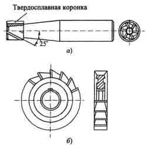
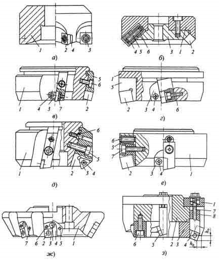
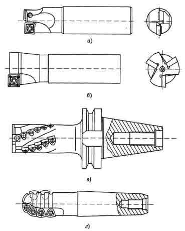
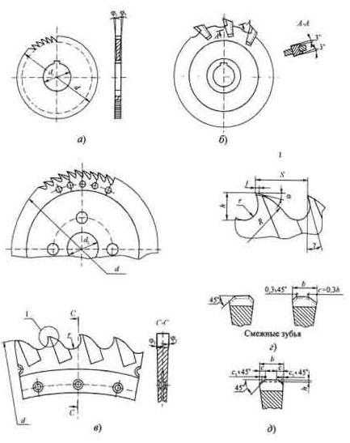

Эти свойства обусловили благоприятные возможности для применения сменных пластин (СМП), а большие размеры корпусов фрез позволяют размещать на них элементы крепления сменных пластин.
Однако, как показала практика, принимая меры к устранению или снижению влияния неблагоприятных факторов на стойкость и производительность процесса фрезерования, удалось добиться в большинстве конструкций фрез широкого применения новых марок режущих материалов и главным образом твердых сплавов. Особенно высокие результаты в этом направлении получены при разработке конструкций торцовых фрез, оснащенных СМП, которые практически вытеснили ранее широко применяемые фрезы с напайными твердосплавными пластинами.
Напайные пластины используют только при изготовлении мелкоразмерных фрез, в которых не удается разместить элементы механического крепления пластин. Но даже и в этих случаях при резании труднообрабатываемых материалов предпочтение отдается монолитным фрезам, изготовленным целиком из твердого сплава и полученным путем прессования в специальных пресс-формах.
Применяются также способы изготовления монолитных фрез или их режущей части методом вышлифовывания из твердосплавных заготовок алмазными кругами, а также резанием из пластифицированных заготовок с последующим их спеканием. Освоено, например, производство цельных твердосплавных концевых фрез диаметром 3...12 мм (рис. 3, а), а также узких дисковых и других видов фрез с прямыми или винтовыми зубьями (рис. 3, б). При этом концевые фрезы изготавливают или заодно с цилиндрическим хвостовиком, или в виде коронок и вставок, соединяемых пайкой со стальным хвостовиком.
В настоящее время в конструкциях фрез средних и крупных размеров способ пайки твердосплавных пластин на корпусы инструментов используется в том случае, когда режущие пластины имеют фасонную форму.
Торцовые фрезы допускают большее разнообразие способов крепления многогранных пластин, и поэтому в настоящее время освоен выпуск огромного числа различных типов таких фрез, наиболее сложные из которых позволяют производить регулировку положения пластин в корпусе с целью получения минимального радиального и торцового биений режущих кромок.
При этом широко применяются пластины трех-, четырехгранные, в форме параллелограмма, реже круглые и пятигранные, негативные и позитивные по геометрическим параметрам, с отверстиями для крепления или без них. Крепление пластин осуществляется винтами или рычагами через отверстие, а также клиньями, прижимающими пластину к гнезду в корпусе или во вкладыше. Рассмотрим на отдельных примерах реализацию указанных выше направлений.
На рисунке позиция (а) приведена фреза с креплением пластин 2 в гнездах корпуса 1. Крепление осуществляется винтами 3 с конической головкой. Для предохранения корпуса от повреждений при поломке пластин часто используют подкладки 4 из твердого сплава или закаленной стали, имеющие форму, подобную форме режущих пластин. Фрезы такого типа наиболее просты по конструкции, компактны, имеют минимальное число деталей, но корпусы этих фрез сложны в изготовлении. Серьезными недостатками этих фрез являются: опасность механического повреждения корпусов в процессе эксплуатации и повышенное биение режущих кромок, вызываемое погрешностями изготовления гнезд под пластины.
Иногда с целью упрощения технологии изготовления фрез и повышения точности положения режущих кромок базы под пластины создают на составных частях корпуса. Примером таких фрез является фреза фирмы «Clarkson» (б). Она состоит из корпуса 1 и опорного кольца 3, на каждом из которых имеется одна база под пластины 2. При этом пластины крепят клином 4 с дифференциальным винтом 5, который ввертывается не в корпус фрезы, а в специальный вкладыш 6.
Использование вкладышей для крепления пластин показано также на примере фрезы фирмы «Widia Krupp» (в). Здесь режущие пластины 2 крепятся во вкладышах 5, устанавливаемых в пазах корпуса 1 и закрепляемых винтами 6. Вылет вкладышей вдоль оси задан точно благодаря тому, что они упираются в стенку кольцевого паза корпуса, получаемого точением напроход. Режущие пластины 2 опираются на дно гнезда во вкладыше, а в радиальном направлении - на корпус фрезы. Крепление пластин производится клином 3 и винтом 4. Под режущие пластины устанавливаются предохранительные пластины 7, закрепляемые винтами. Таким образом, корпус получается технологичным, а крепление обеспечивает малое биение режущих кромок. Использование вкладышей также позволяет избегать повреждения дорогостоящего корпуса при поломке пластин и осуществлять их быструю замену. В этой конструкции использованы вкладыши с двумя базами под пластины: по опорной плоскости и одной грани пластины.
Созданы также конструкции фрез с базированием пластин во вкладыше по трем плоскостям. Примером таких фрез являются фрезы фирмы «Sandvik Coromant» (г). Здесь вкладыши (кассеты) 5 в осевом направлении упираются в стенку кольцевого паза и крепятся в корпусе 1 винтом 6. Режущие пластины 2 прижимаются клином 3 с помощью винта 4. При этом в одном и том же корпусе фрезы могут устанавливаться вкладыши с гнездами под различные формы и размеры режущих пластин, в том числе из разных инструментальных материалов, что упрощает ведение инструментального хозяйства. Такой метод конструирования фрез получил название модульно-кассетного. Его особенно выгодно использовать в условиях гибкого автоматизированного производства, характеризуемого быстрой сменностью номенклатуры изделий и требующего особой мобильности в обеспечении инструментальной оснасткой.
Для обеспечения высокой точности расположения режущих кромок относительно оси вращения фрезы создан ряд конструкций фрез с регулировкой в осевом направлении положения вкладышей в пазах корпуса с помощью винтов или клиньев, в результате чего удается довести торцовое биение до 0,005 мм. При этом в зависимости от диаметра фрезы радиальное биение составляет 0,05...0,10 мм, что достигается за счет высокой точности исполнения корпусов фрез, кассет и использования прецизионных пластин. Примером таких инструментов может служить фреза фирмы «Walter» (д). Здесь вкладыши 2, установленные в пазах корпуса 1 крепятся винтами 5. Режущие трехгранные пластины 3 крепят винтами 4 через их центральные отверстия. В случае применения этих фрез для чистовой обработки используют регулировочный винт 6, ось цилиндрической части которого смещена относительно оси конического отверстия в корпусе. За счет этого при вращении винта 6 происходит перемещение вкладыша вдоль паза корпуса и тем самым регулируется положение режущих кромок пластин в осевом и радиальном направлениях.
Простой способ регулировки положений вкладышей с помощью клиньев показан на примере фрезы фирмы «Sandvik Coromant» (е). Здесь крепление пластин 2 осуществляется прижатием клина 3 винтом 4, а крепление вкладыша к корпусу 1 - винтом 7. Смещение вкладыша вдоль оси фрезы регулируется с помощью винта 6 и клина 5.
Рассмотрим еще две разновидности торцовых фрез, оснащенных СМП: с тангенциальным (ж) и ступенчатым расположениями пластин (з).
Фрезы с тангенциальным по отношению к корпусу расположением пластин впервые были предложены фирмой «Hertel» (Германия). За счет такого расположения пластин резко увеличивается их прочность при ударной нагрузке. При этом крепление пластин 2 с отверстием производится винтом 3 через изогнутый в виде рычага штифт. Для базирования пластин 2 используют вкладыши 4 и 5. Первый вкладыш фиксируют в гнезде корпуса 1 штифтом 6, а второй, регулируемый в осевом направлении, винтом 7. Такие фрезы позволяют значительно увеличить подачу, а следовательно, и производительность, но из-за уменьшенной длины режущих кромок они пригодны только для снятия небольших припусков.
Таким же недостатком обладают и другие вышеприведенные конструкции фрез, за исключением фрез, оснащенных пластинами в форме параллелограмма, наибольшая сторона которого выступает в качестве главной режущей кромки.
Для фрезерования заготовок с большими припусками рекомендуются фрезы со ступенчатым вдоль оси расположением пластин, которое, как показала практика, обеспечивает хорошее деление припуска по ширине и безвибрационную работу инструмента, что особенно важно для фрез, оснащенных твердым сплавом. На позиции (з) показана двухступенчатая фреза конструкции ВНИИинструмент, которая отличается тем, что у нее режущие пластины 4 и 5 расположены на разных уровнях от торца. Пластины опираются на кольцо 3 с пазами и внешней конической ступенчатой формой, которое крепится винтами 6 на корпусе 2, имеющем такие же пазы. Таким образом, сменные пластины 4 и 5 оказываются смещенными в радиальном и осевом направлениях. Пластины прижимаются к пазам в корпусе 2 и кольце 3 с помощью винтов 7, ввертываемых в державки 8, на которые они устанавливаются с посадкой на штифты. Винты 7 опираются на кольцо 1, напрессованное на корпус 2.
Концевые и дисковые фрезы труднее всего поддаются оснащению механически закрепляемыми пластинами в силу их конструктивных особенностей и условий резания.
Из-за малых диаметров концевых фрез и малой ширины среза у дисковых фрез базы под пластины выполняются непосредственно в корпусах инструментов. Крепление режущих пластин осуществляется винтами через отверстия, клиньями и прихватами сверху или упругими деформируемыми элементами (у пластин без отверстия). Формы режущих пластин - треугольные, квадратные, круглые, ромбические, прямоугольные или специальные, разработанные только для таких инструментов. Число режущих пластин определяется конструктивными размерами инструментов. Так, например, у концевых фрез диаметром d < 12 мм z = 1, a d = 12...40 мм z = 2...4. Для лучшего дробления стружки и создания положительных передних углов рекомендуется использовать позитивные или негативные пластины со стружкодробящими канавками на передней грани.
На рисиунке, позиции (а, б) приведены двузубая и трехзубая концевые фрезы фирмы «Sandvik Coromant» (Швеция), оснащенные позитивными (a = 11°) прямоугольными пластинами, применяемые для обработки уступов, пазов и выемок.
На позиции (в) показана концевая фреза d = 20...50 мм для обработки глубоких пазов или высоких уступов длиной до 70 мм с креплением пластин винтами в гнездах, расположенных по винтовой линии. На позиции (г) показана фреза для копировальных работ, применяемая при обработке фасонных выемок в пресс-формах, оснащенная специальными пластинами радиусной формы.
Хвостовики концевых фрез могут быть цилиндрическими, коническими или специальными короткими цилиндрическими. На станках с ЧПУ эти фрезы закрепляются в специальных патронах.
Дисковые фрезы, оснащенные твердосплавными пластинами, до недавнего времени применяли обычно в напайном варианте. Однако вследствие сложности заточки и особенно из-за отпаивания режущих пластин при нагреве (особенно на трехсторонних фрезах) все большее распространение получают фрезы с механическим креплением СМП. В конструкциях этих фрез в основном использованы те же способы и элементы крепления, что и в конструкциях торцовых фрез. Однако здесь возникают дополнительные трудности, связанные с необходимостью размещения элементов крепления в узких корпусах фрез. У трехсторонних фрез необходимо также обеспечить надежный стружкоотвод и положительные передние углы на торцовых режущих кромках.
Дисковые фрезы, оснащенные твердосплавными пластинами, до недавнего времени применяли обычно в напайном варианте. Однако вследствие сложности заточки и особенно из-за отпаивания режущих пластин при нагреве (особенно на трехсторонних фрезах) все большее распространение получают фрезы с механическим креплением СМП. В конструкциях этих фрез в основном использованы те же способы и элементы крепления, что и в конструкциях торцовых фрез. Однако здесь возникают дополнительные трудности, связанные с необходимостью размещения элементов крепления в узких корпусах фрез. У трехсторонних фрез необходимо также обеспечить надежный стружкоотвод и положительные передние углы на торцовых режущих кромках.
Выпускают также фрезы с вкладышами, имеющими две или три базы для крепления пластин. На позиции (б) схематично показано крепление трехгранных пластин 2 во вкладышах 5 клиньями 3 и винтами 4. Вкладыши 5 имеют V-образные пазы под пластины и располагаются со стороны передней поверхности пластин 2. Они крепятся в корпусе 1 винтами 6.
У таких фрез вкладыши сменные, корпус хорошо предохраняется от повреждений, обеспечивается нормальный стружкоотвод, но они могут успешно применяться только при относительно небольших глубинах резания.
Более технологичное, компактное и надежное крепление пластин 2 достигается винтами с конической головкой через отверстие к вкладышу 3, а крепление вкладыша в корпусе 1 осуществляется с помощью клина 4 и винта 5. Для предохранения вкладышей от смещения при больших нагрузках и регулировке по высоте на их опорных поверхностях и в гнездах создают рифления (в).
При обработке резанием пазов небольшой ширины (В = 5... 10 мм) и большой глубиной реза (h = 18...84 мм) фирмой «Sandvik Coromant» (Швеция) разработаны дисковые фрезы диаметром d = 80...250 мм с непосредственным креплением специальных пластин винтами с двух сторон корпуса (г). Эти пластины имеют положительные передние углы. При тангенциальном креплении они обладают наибольшей прочностью, а при наличии четырех режущих кромок - большей стойкостью.
Для отрезных работ с В = 2...6 мм, h = 17...87 мм этой же фирмой созданы фрезы диаметром 80...315 мм (д) со вставными пластинами специальной формы, разработанными для отрезных резцов. Крепление пластин в корпусе осуществляется за счет упругих деформаций стенок пазов и сил трения при установке их в клинообразных пазах.
Замена пластин при поломках или выкрашивании производится с помощью специального ключа (д). Специальная форма передней грани пластин обеспечивает хорошее дробление стружки, наименьшие силы резания и высокую надежность фрез.